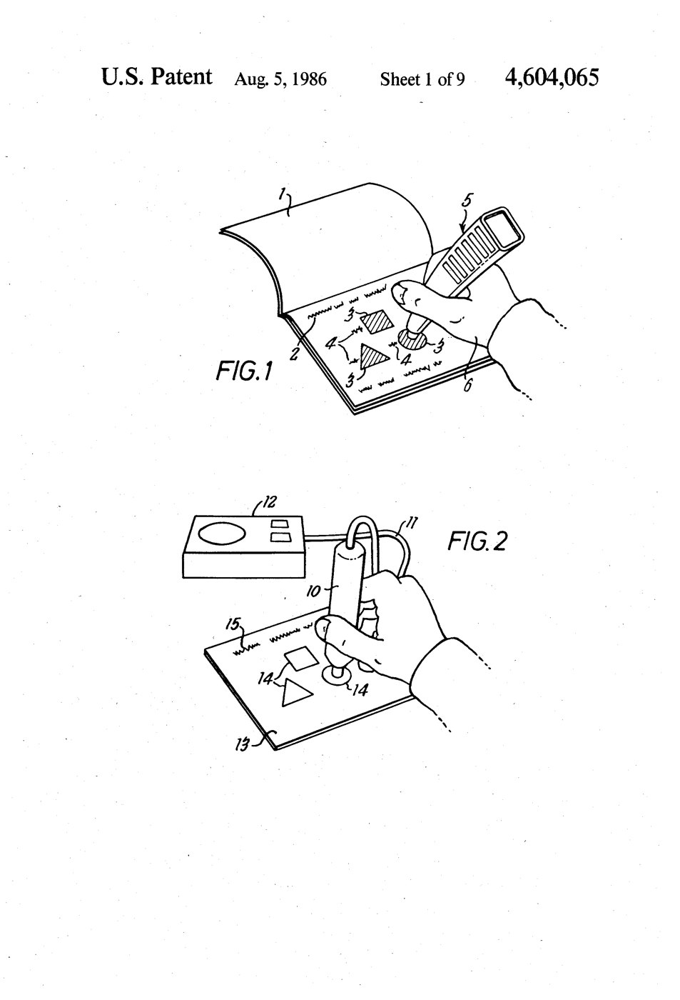
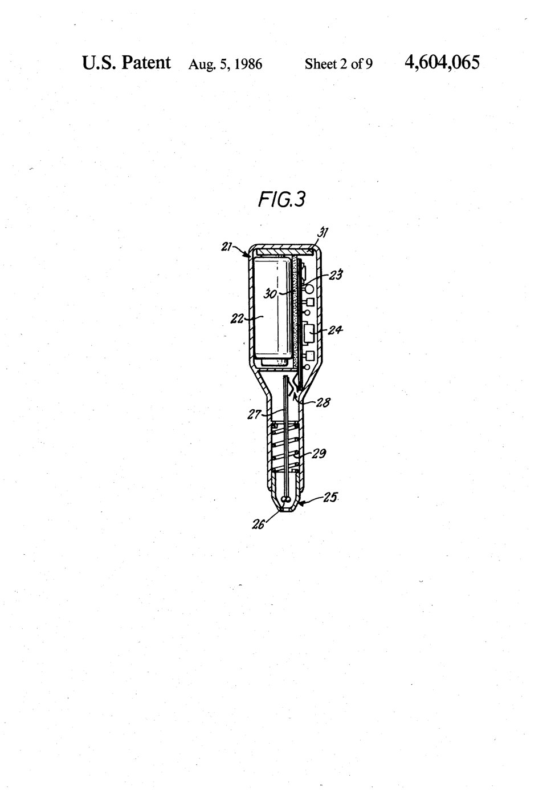
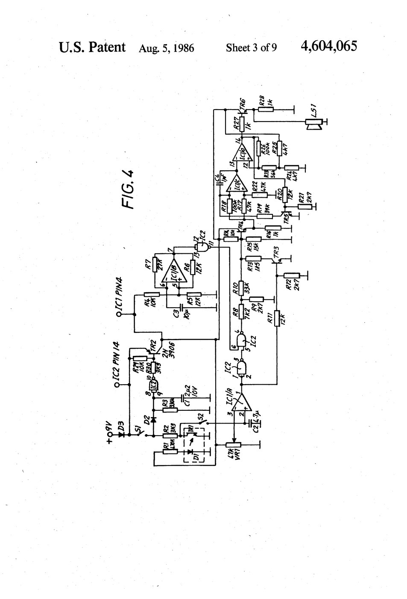

Questron Electronic Answer Wand
A wand that reads hidden infrared ink on a printed page and answers with three tones

Overview
Questron was a mid-1980s educational toy system from Price/Stern/Sloan Publishers (the California publisher best known for Mad Libs), pairing a battery-powered "electronic answer wand" with a series of illustrated activity books such as My First Book of Animals (1984). The wand is not a barcode scanner and reads no mark the eye can see. It works by infrared reflectance: on each multiple-choice page, the single correct answer is printed with carbon-black ink that absorbs infrared light, while the decoy color inks (cyan, magenta, yellow) are essentially transparent to IR. Pressing the wand's spring-loaded tip down on an answer lets an IR emitter and photodetector measure how much light reflects back, and the wand answers with a tone and a red or green LED — a low buzz for wrong, a higher tone for correct, and a rising "whoop" for completing a set.
### Input by hidden material property
US Patent 4,604,065 ("Teaching or amusement apparatus," filed 1983, granted August 1986, assignee Price/Stern/Sloan) describes the whole scheme: a detector pen that discriminates between areas on a printed substrate by a property invisible to the naked eye — magnetic, infrared-reflective, or capacitive differences in the printing. The prototype embodiment uses IR reflectance to distinguish a carbon-loaded correct answer from non-absorbing decoys. This is optical sensing aimed not at a readable code but at a physical property difference the human reader can never see, which makes the wand feel like it is guessing along with you.
### A reading ritual, not a scanner
Using Questron is closer to a divining ritual than to scanning: you cannot point at the right answer intentionally, because nothing visible distinguishes it. You press the wand onto each candidate answer in turn and the machine is the only thing that knows. In more elaborate Questron activities, the same principle supported hidden-maze and letter-tracing games where sliding the wand off an invisible path latches an error signal. The feedback is deliberately impoverished — three tones and two LEDs — so all of the "which one is right?" tension lives in the hidden ink.
### Why it belongs
Questron inverts the usual direction of reading technology. Where barcode readers (Cauzin Softstrip, TI Magic Wand, LaserBarcode) make a visible pattern machine-readable, Questron hides the answer in a material property and keeps the reading secret even from the human. It is the museum's only hidden-ink optical sensing input and its clearest demonstration that an interface can sense things no person can — a child-sized, playful ancestor of the invisible-sensing interactions that later showed up in pens, touchpads, and augmented-reality markers. It stands distinct from the TI Magic Wand (visible barcode plus speech), Cauzin Softstrip (visible encoded data), and the Optacon (tactile reading of visible text).
Deep dive
Team & pioneers
- Stephen O. Frazer. Inventor named on US Patent 4,604,065.
- Price/Stern/Sloan Publishers Inc. Assignee; California publisher of the Questron line and its activity books.
Media

